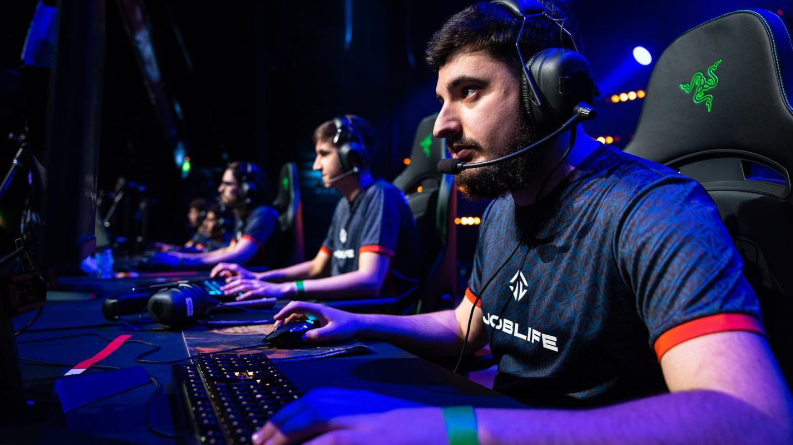
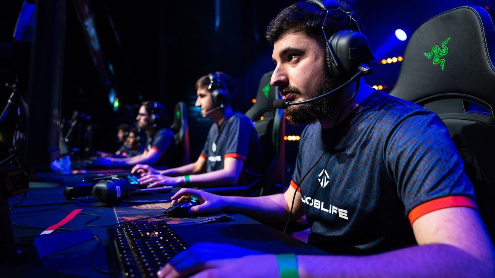

Mes passions
L'E-sport
Je suis un grand fan de l'e-sport, et je prends beaucoup de plaisir à soutenir mes équipes préférées. J'apprécie particulièrement l'intensité des compétitions et le talent des joueurs. Mon intérêt pour l'e-sport va au-delà d'une simple distraction, c'est une véritable passion qui me permet de me connecter avec une communauté partageant les mêmes centres d'intérêt. Chaque match est une source d'excitation et de moments mémorables pour moi.
 

Le football
Le football a vraiment marqué une décennie de ma vie, particulièrement au sein de clubs locaux comme Seynod, Annecy-le-Vieux et Vieugy. Bien sûr, ce ne sont pas les clubs les plus renommés, mais chaque expérience a laissé une empreinte significative sur moi. L'esprit d'équipe, que j'ai cultivé sur le terrain, s'est avéré être une compétence transférable clé dans ma carrière de développeur web. Travailler en équipe, tout comme sur le terrain de football, est essentiel dans le monde du développement. La collaboration, la communication efficace et la résolution collective de problèmes sont des éléments qui ont trouvé une place naturelle dans ma manière de travailler. Ces clubs, bien que modestes, ont donc joué un rôle déterminant en me fournissant des compétences humaines et professionnelles précieuses, et je suis reconnaissant pour chaque leçon tirée de ces expériences.